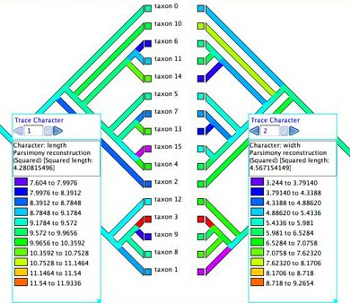
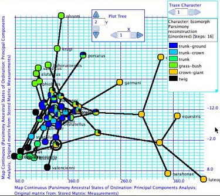
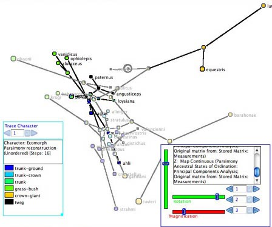
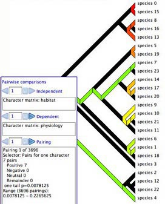
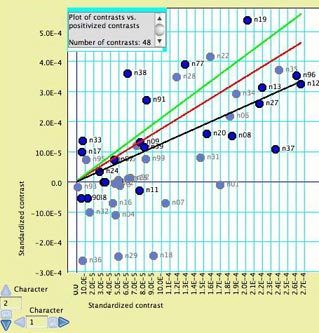
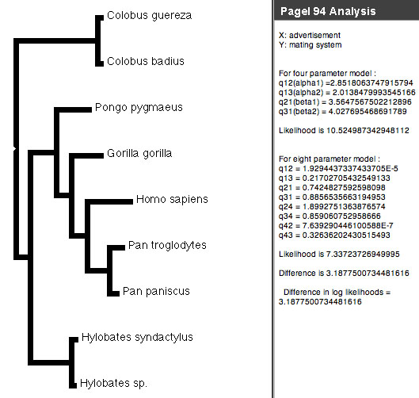

Processes of Character Evolution
Some characters evolve more quickly than others; some characters
depend on others in their evolution. Discovering the nature of
these evolutionary processes for a character from an analytical
point of view involves determining a model and its parameters.
For analyses that involved combined models of character change,
speciation and extinction, see the page on Diversification.
Contents
- Single characters
- Correlated characters
Estimating parameters
Maximum Likelihood estimates of rates and biases can be obtained
for categorical characters for two simple models, the Mk1
model and the AsymmMk
model. For more information on these models, see the page on ancestral
state reconstruction. Mesquite cannot yet estimate parameters
for models of DNA sequence evolution.
Three modules provide calculations to estimate parameters for
the Mk1 and AsymmMk models:
- Mk1 Estimated Rate—
Estimates the rate of a character's evolution under the simple
Mk1 model.
- Forward/Backward Rates — Uses maximum
likelihood to estmate the rates of forward and backward changes
(0 to 1 and 1 to 0 changes respectively), or alternatively the
overall rate and the bias in gains versus losses, using the
AsymmMk model on a tree for a given character.
- Asymmetry Likelihood Ratio Test — Calculates
the test statistic for the likelihood ratio test comparing the
asymmetrical and one parameter models [2ln(L(Asymm.)/L(Mk1)],
on a tree for a given character.
These calculations consider a categorical character and a tree.
As such, they can be considered to be values describing a character
(and thus are available when analyzing characters, as for instance
in a Characters Bar Chart or Scattergram or a List of Characters
Window) or values describing a tree (and thus are available when
analyzing trees, as for instance in a Trees Bar Chart or Scattergram
or a List of Trees Window). To access them as values for characters,
select them under "Character value with current tree" or "Character
value with tree". To access them as values for trees, select them under
"Tree value using character". Two example files illustrate
parameter estimation, Mesquite_Folder/examples/Ancestral_States/15a-estimatingParameters.nex
and Ancestral_States/15b-estimatingParameters.nex
You can explore the likelihood surface of the
two parameters AsymmMk model using the (Tree
Window)Analysis>Other Anayses>Likelihood Surface Asymm Mk
menu item.
Correlations: Visualizations
To study correlations or associations among characters, there
are both correlation calculators (see Pairwise
comparions, Felsenstein's contrasts, and
Pagel's correlation method, below) and
heuristic visualizations. The latter include:
- Mirror Tree Window —
When a Tree Window is open, you can request and alternative
view of the same tree by selecting Tree>Mirror
Tree Window. This shows the same tree as in the tree
window, shown in duplicate tips-to-tips. The purpose of this
is to allow you to display two different visualizations (one
at left, one at right) and compare them. Character correlations
can be explored by tracing evolution of two characters, as shown
here.
Example files: Basic_Examples/tree_viewing/08-mirrorTree.nex;
Ancestral_States/15-Mk1AsymmCompare.nex; Pairwise_Comparison/01-pairwise.nex.

- Plot Tree 2D — Plots the tree in a
2-dimensional space, available as a tree drawing form in the
Drawing>Tree
Form submenu. If the axes represent the state of
the taxa in two continuous characters, then this allows one
to map the tree into the character space, which may suggest
patterns or correlations. The internal nodes of the tree can
are placed at the reconstructed ancestral states. An example
is shown here.
Example file: Multivariate_Continuous/07-anoles.nex

- Plot Tree 3D — Plots the tree in a
3-dimensional space, available as a tree drawing form in the
Drawing>Tree Form submenu. This is part of the Rhetenor
package. As with Plot Tree 2d, this allows one to map the tree
into the character space. The tree can be rotated in space using
the Rotation sliders in the legend. An example is shown here.
Example file: Multivariate_Continuous/08-anoles.nex

- Taxa Scattergram — Select Analysis>New
Scattergram For>Taxa to obtain a bivariate plot
for taxa. You will be asked whether to use the same or different
calculations for the two axes. By "Different" is meant
two entirely different calculations, such as the percentage
of missing data in the taxon on one axis, and the state of a
continuous variable on the other. Choose "Same" and
then, if asked, indicate you want "Continuous state of
taxon". You will therefore be plotting the taxa according
to their states in one character versus another. If PDAP
is installed, you will be able to do linear regression by selecting
Scattegram>Analysis>Other
Choices..., and choosing one of the Scattergram Diagnostics.
Note: any correlation seen is aphylogenetic. Phylogenetic correlations
can be studied by using the Felsenstein's contrasts
calculations in PDAP.
Example files: Multivariate_Continuous/01-wingsPlot.nex
and subsequent
Correlations: Pairwise comparisions
Character correlations can be tested using pairwise comparisons
as described by Read & Nee (1995) and W. Maddison (2000).
This is available under the Analysis menu of Tree Windows. The
module chooses pairs of taxa, and indicates how the pairs compare
in two characters: does the member of the pair with the higher
value (say, state 1) in one character have higher or lower value
in a second character? A summary over all pairs is given in the
legend, as shown below. There are three options for choosing pairs:
- Most pairs — choose pairs to maximize number of pairs,
regardless of the states in the characters
- Pairs for one character — choose pairs of taxa
that differ in the state of the first character (independent
variable)
- Pairs for two characters — choose pairs of taxa
that differ in the state of both characters

The graphical display shows the current pairing chosen; you
can scroll through all pairings using the legend.
Example files: Pairwise_Comparison/01-pairwise.nex
and subsequent
Felsenstein's Independent Contrasts
Correlations among continuous valued characters can be studied
using the separately-available PDAP
package (Midford et al., 2003), which (among other things) calculates
Felsenstein's (1985) independent contrasts and displays them in
a scatterplot:

The points in the plot are nodes in the tree, with the X and
Y axes representing the independent contrast across the node in
each of the two characters. Regression lines, confidence intervals
and other statistics can be calculated by PDAP. When only some
nodes in the tree are selected, they are highlighted in the plot
as shown above.
The PDAP documentation or example files should be consulted for
more details.
Pagel's Correlation Method
Pagel's (1994) Correlation test is available via the correl package
(Midford & Maddison) distributed with Mesquite. It uses likelihood
to test whether the evolution of two binary (0,1) characters is
independent. To begin an analysis, choose Correlation Analysis
from the Analysis menu of a tree window. If there is more than
one option for method, choose Pagel 94 (if there is only one option,
you won't be asked). You will be asked how intense to make the
likelihood search (number of extra iterations), whether to present
a p-value, and how many simulations to use to estimate the p-value.
Options are explained in more detail on the page
focusing on the analysis. A panel showing the analysis will appear
in the tree window:

If the difference in likelihoods between the four (independent)
and eight (correlated) models is high enough, then we can reject
the null hypothesis of independence. A separate page of the manual
describes the Pagel94 modules in more
detail.
Use with Pagel's Discrete and Multistate
Mesquite can import and export files for use by the Discrete
(Pagel, 2000) and Multistate (Pagel, 2002) programs. For import,
attempt to read the Pagel format file in Mesquite, and choose
the file format from the import dialog box. For export, select
the Export... menu item from the File menu.
References
Felsenstein, J. 1985. Phylogenies and the comparative method.
American Naturalist, 125:1–15.
Maddison, W.P. 2000. Testing character correlation using pairwise
comparisons on a phylogeny. J. Theoretical Biology. 202: 195-204.
Midford, P. E., T. Garland Jr. & W. Maddison. 2002. PDAP:PDTREE
package for Mesquite, version 1.00.
Pagel, M. 1994. Detecting correlated evolution on phylogenies:
a general method for the comparative analysis of discrete characters.
Proc. R. Soc. London B 255: 37-45.
Pagel, M. 2000. Discrete, version 4.0. A computer program distributed
by the author.
Pagel, M. 2002. Multistate, version 0.6. A computer program distributed
by the author.
Read, A. F. and S. Nee. 1995. Inference from binary comparative
data. J. Theoretical Biology 173:99-108